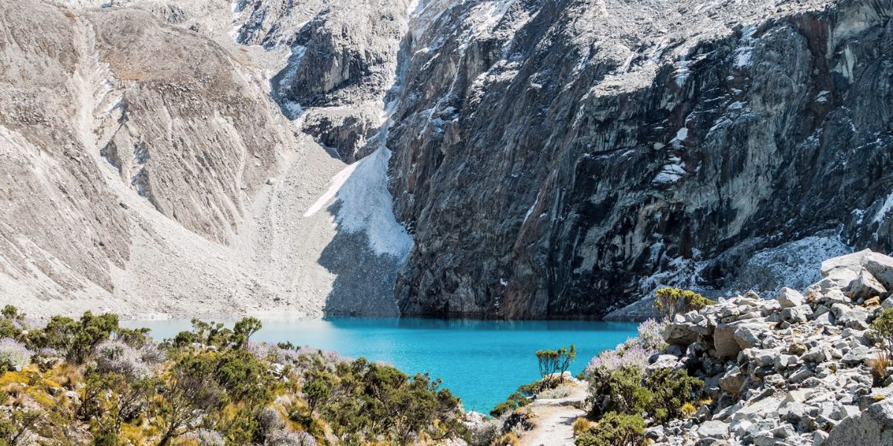
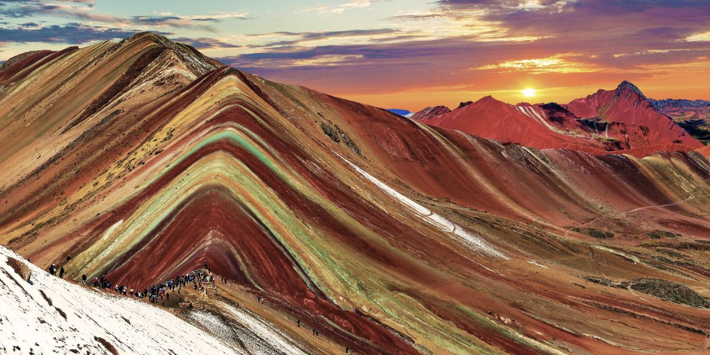

O Peru é um destino repleto de experiências inesquecíveis, desde as maravilhas naturais até os tesouros históricos. Se você está se preparando para explorar este incrível país, confira os passeios mais recomendados, que vão te levar a lugares como as antigas ruínas de Machu Picchu, as misteriosas Linhas de Nazca e os deslumbrantes vales andinos. Prepare-se para viver aventuras únicas e descobrir a verdadeira essência do Peru!
Machu Picchu

Machu Picchu é uma das mais importantes heranças da civilização Inca, localizada a 2.430 metros de altitude nas montanhas andinas. Construída no século XV, essa cidade antiga é um verdadeiro mistério, com teorias sobre seu uso como residência real ou centro religioso. Suas impressionantes construções, feitas com pedras perfeitamente encaixadas, resistem ao tempo e aos terremotos.
O local é dividido em áreas agrícolas e urbanas, com destaque para o Templo do Sol e a Intihuatana, uma pedra usada para observações astronômicas. Cercada por paisagens deslumbrantes, Machu Picchu é considerada uma das Novas Sete Maravilhas do Mundo, atraindo milhares de visitantes que buscam vivenciar a história e a magia desse destino único.
Navegação no Lago Titicaca

O Lago Titicaca, localizado entre o Peru e a Bolívia, é o maior lago navegável do mundo em altitude, com 3.812 metros acima do nível do mar. Além de sua beleza impressionante, o lago é cercado por histórias e tradições que remontam às civilizações antigas. Um passeio de barco pelo Titicaca oferece a chance de explorar suas ilhas flutuantes, como as Ilhas Uros, feitas de totora, e a encantadora Ilha de Taquile, famosa por sua cultura preservada e paisagens de tirar o fôlego.
Navegar pelo Lago Titicaca é uma experiência única, onde você pode vivenciar a vida nas ilhas e admirar a serenidade e o misticismo desse vasto corpo d'água, rodeado por montanhas majestosas.
Lagoa 69
A Lagoa 69 é uma das mais impressionantes atrações naturais do Peru, localizada no Parque Nacional Huascarán, na Cordilheira Blanca. A lagoa, de um azul vibrante, é cercada por imponentes montanhas e geleiras, criando um cenário deslumbrante. Para chegar até lá, é necessário fazer uma trilha desafiadora de cerca de 6 horas, mas o esforço é recompensado com a vista espetacular da lagoa e das montanhas ao redor. A caminhada é uma verdadeira imersão na natureza selvagem dos Andes, ideal para quem busca aventura e paisagens de tirar o fôlego.
Rainbow Mountains
As Montanhas Arco-Íris, ou Vinicunca, são uma das paisagens mais impressionantes do Peru, localizadas na região de Cusco. Conhecidas por suas cores vibrantes, que variam do vermelho ao verde, amarelo e azul, essas montanhas são o resultado de processos geológicos que criaram camadas de minerais de diferentes tonalidades. A caminhada até o topo, que leva cerca de 3 a 4 horas, oferece vistas espetaculares dos Andes e uma experiência única de imersão na natureza. As Montanhas Arco-Íris se tornaram um destino popular para quem busca beleza natural e um desafio de aventura em um dos cenários mais coloridos do mundo.
City Tour em Cusco

Cusco, antiga capital do Império Inca, é um verdadeiro museu a céu aberto, onde passado e presente se encontram. O city tour em Cusco leva você a explorar importantes pontos históricos e culturais, como o Templo de Qorikancha, a impressionante Fortaleza de Sacsayhuamán e a Plaza de Armas, coração da cidade. Além de suas ruínas incas, Cusco oferece um charme único, com suas ruas estreitas, igrejas coloniais e mercados vibrantes. É a oportunidade perfeita para mergulhar na rica história do Peru enquanto aprecia a beleza de uma cidade que preserva suas tradições e heranças.